Itinerario 2 · Exposición Ondas
El micrófono se convierte en el gran protagonista del retrato radiofónico, actuando como mediador visible entre la voz, la música y el oyente.
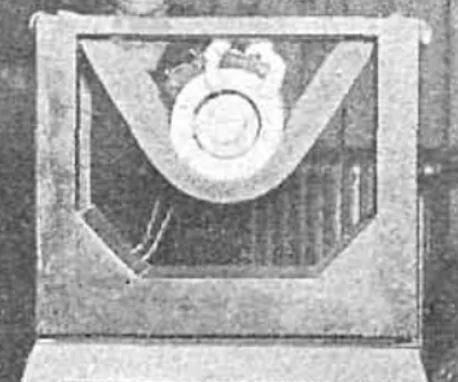
000
El micrófono
La presencia del micrófono es especialmente destacada. Lo encontramos en numerosas ocasiones y con muchos intérpretes distintos, pero es muy abundante con cantantes, subrayando el papel central de la canción, en todas sus variantes, en la escucha radiofónica de estos años.
Más que un simple dispositivo técnico, el micrófono actúa como verdadero mediador visible entre la voz, la música y el nuevo oyente radiofónico.
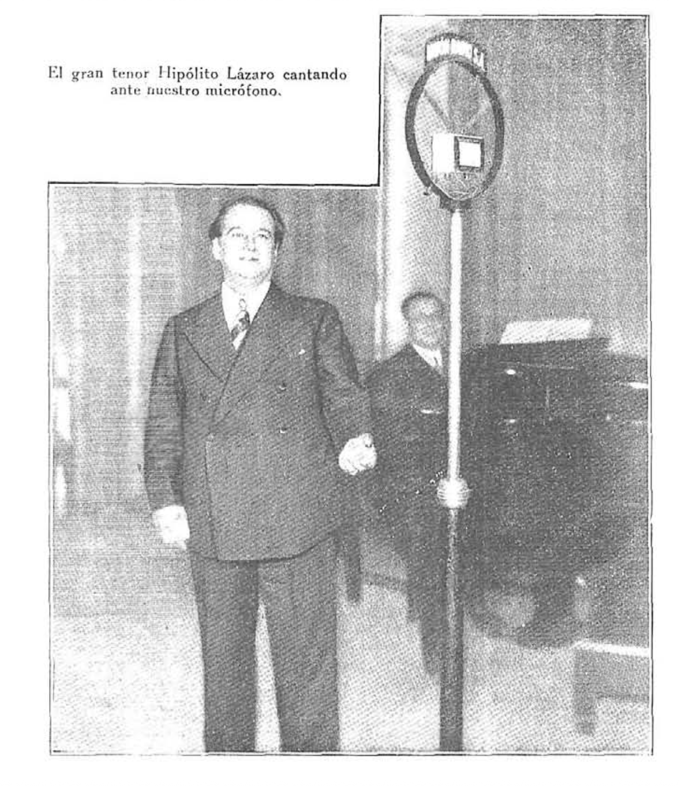
001
1 de noviembre de 1930
Inauguramos esta sección con el gran tenor Hipólito Lázaro cantando ante el micrófono de Unión Radio. Aunque el pie de foto destaca al intérprete, es el micrófono el que ocupa el centro de la escena.
A lo largo de los años, este objeto irá ganando protagonismo en la iconografía de la revista Ondas: cada vez más centrado, cada vez más visible, hasta convertirse en el verdadero símbolo de la radiodifusión y, con ella, de una nueva forma de escuchar música.
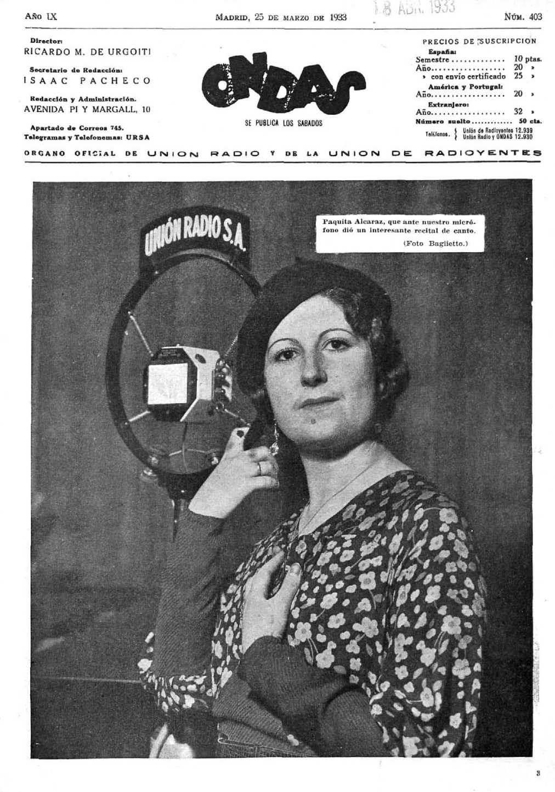
002
25 de marzo de 1933
La cantante Paquita Alcaraz posa en la portada de Ondas junto al micrófono de Unión Radio, claramente identificado con el logotipo de la emisora. El micrófono asciende así al lugar más destacado de la revista: la primera página.
No es un mero instrumento técnico, sino un icono visual que comparte protagonismo con la artista. Esta presencia en portada no es casual: se convertirá en un recurso habitual, confirmando que la retransmisión musical era la seña de identidad de la publicación.
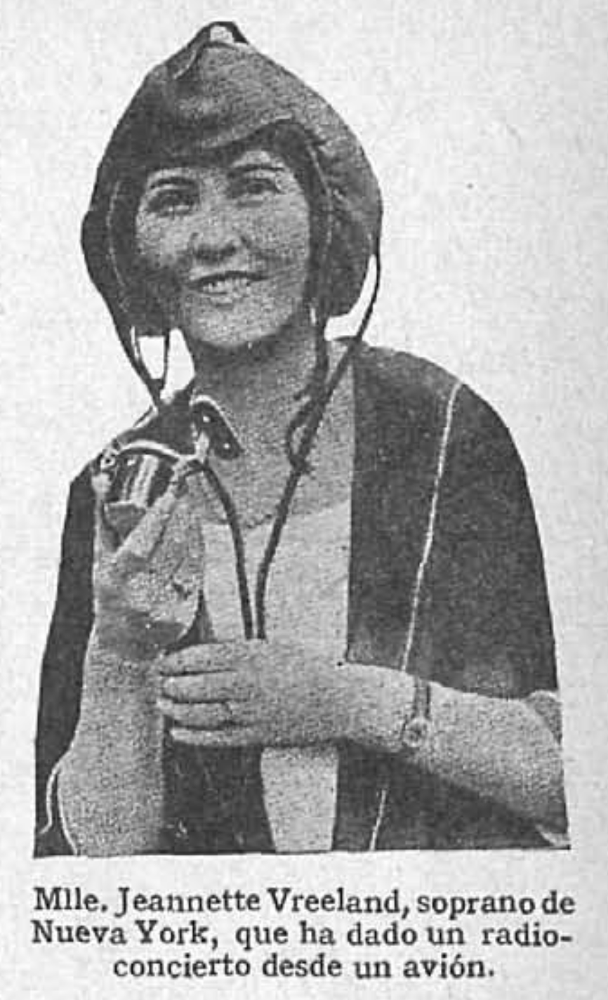
003
4 de julio de 1926
Los pequeños micrófonos portátiles permitían llevar la retransmisión musical a los lugares más insospechados. Un caso novedoso fue el de la soprano neoyorquina Jeannette Vreeland, fotografiada aquí con casco y equipo de aviación, tras ofrecer un radioconcierto desde un avión.
La promesa de la radio era precisamente que el oyente pudiera escuchar desde su casa músicas interpretadas en cualquier lugar del mundo. Experimentos como este llevaban esa promesa hasta el extremo.
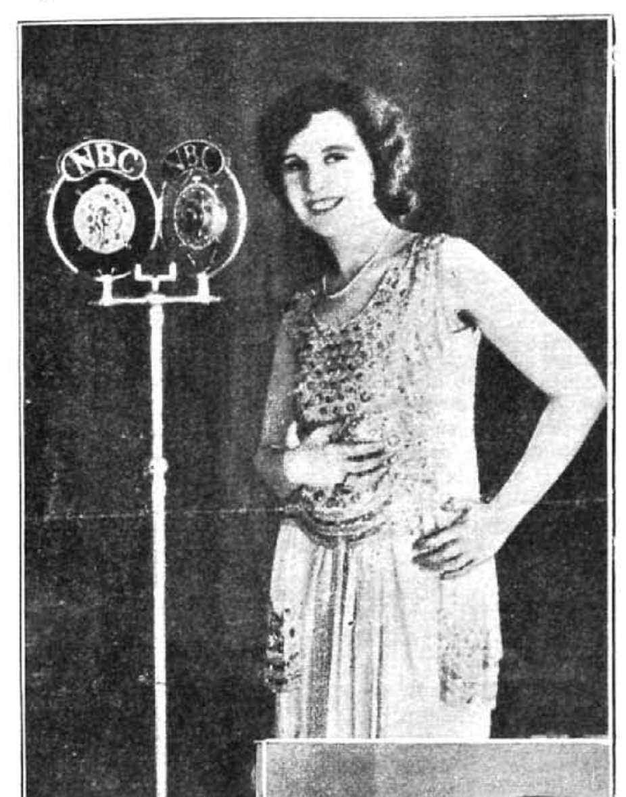
004
3 de agosto de 1929
Lillian Taiz, cantante de la NBC en Nueva York, posa junto a los micrófonos dobles de la cadena norteamericana, con sus logotipos bien visibles. Cada emisora utilizaba el micrófono como soporte de su identidad corporativa.
En los pequeños estudios radiofónicos no solía haber público, de modo que el micrófono ocupaba el centro de la iconografía musical. Era, al mismo tiempo, el instrumento de la transmisión y el emblema de la emisora.
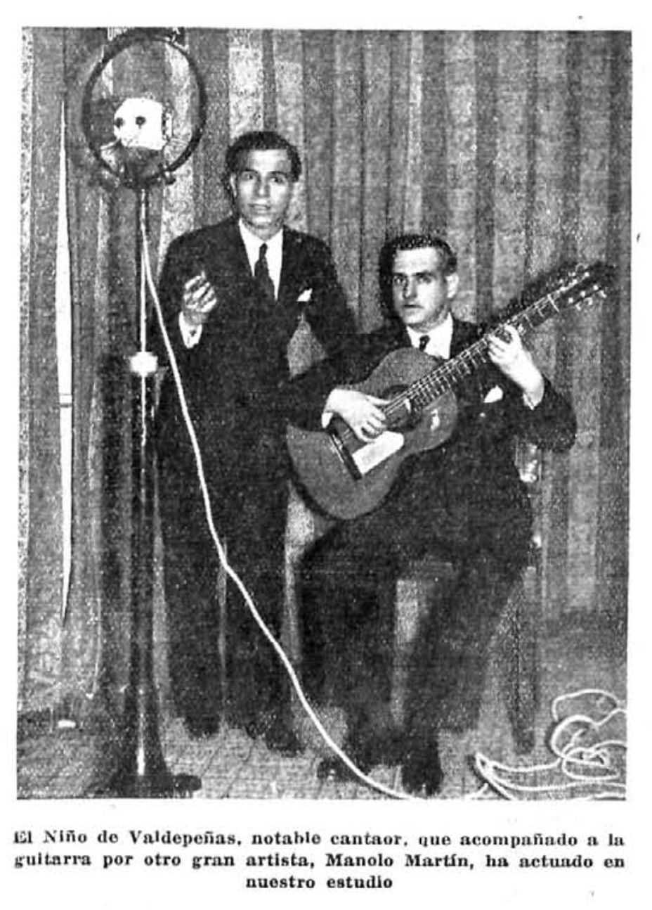
005
14 de julio de 1934
El Niño de Valdepeñas, cantaor flamenco, y el guitarrista Manolo Martín actúan en el estudio de Unión Radio. La imagen muestra cómo el micrófono acogía todos los géneros musicales, incluido el flamenco, una práctica hasta entonces ligada a espacios concretos: cafés cantantes, tabernas, fiestas.
La radio funcionaba así como un gran igualador de prácticas musicales muy diversas, nacidas en contextos sociales distintos, democratizando el acceso a la cultura.
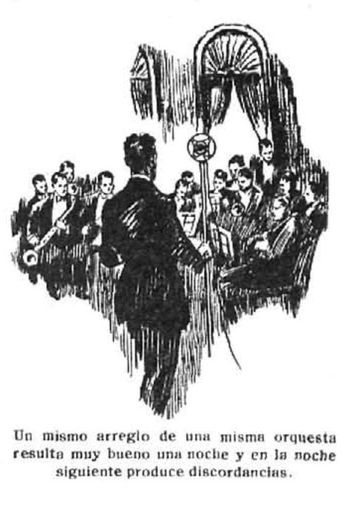
006
21 de agosto de 1927
Pronto aparecieron también en Ondas artículos de carácter técnico que reflexionaban sobre las posibilidades y los límites de esta nueva tecnología. Esta ilustración acompaña a uno de ellos: un director ante su orquesta, con el micrófono situado en el centro.
El artículo se pregunta por qué un mismo arreglo de una misma orquesta resulta excelente una noche y produce «discordancias» la siguiente. La pregunta revela una inquietud temprana: el micrófono no era un transmisor neutral, sino un mediador que transformaba la experiencia musical.
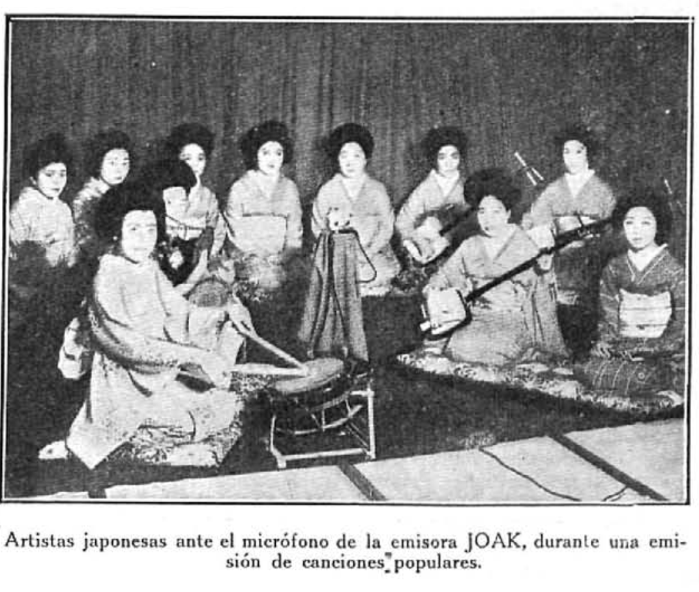
007
21 de diciembre de 1929
Si el micrófono acogía géneros diversos, también mostraba músicas de distintas latitudes. En esta imagen, un grupo de artistas japonesas interpreta canciones populares ante el micrófono de la emisora JOAK, tocando instrumentos tradicionales como el shamisen.
Para los lectores españoles de Ondas, imágenes como esta constituían una ventana a tradiciones musicales lejanas. La radio, apenas nacida, ya insinuaba su capacidad para conectar sonidos de todo el mundo.
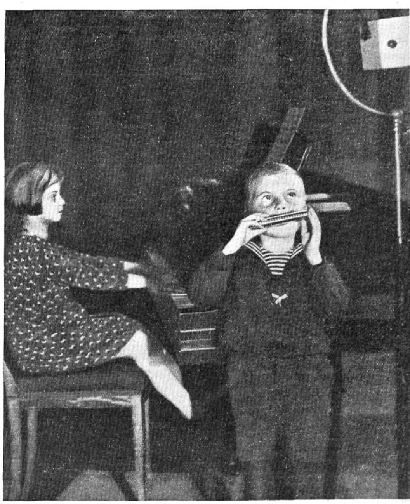
008
9 de septiembre de 1933
El micrófono, democratizador, también daba voz a la infancia. En esta fotografía, una niña toca el piano mientras un niño interpreta la armónica, ambos ante el gran micrófono del estudio que asoma por el borde derecho de la imagen.
La mirada del pequeño hacia arriba subraya la diferencia de escala entre los niños y el aparato, y revela, casi sin querer, la solemnidad que implicaba actuar ante la emisora.
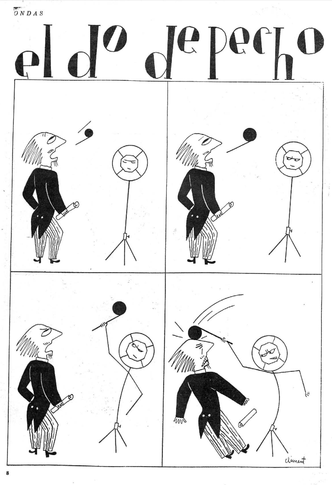
009
24 de junio de 1933
En «El do de pecho», viñeta firmada por Climent, el micrófono adquiere vida propia. En cuatro viñetas, asistimos a un duelo entre un cantante que intenta alcanzar el agudo más temido de la ópera y un micrófono cada vez más irritado, que termina golpeándole con su propia nota musical.
Tanto el micrófono como el altavoz eran tan centrales en la nueva escucha radiofónica que los humoristas gráficos los convirtieron en personajes con emociones propias, capaces de juzgar (y castigar) a los intérpretes.
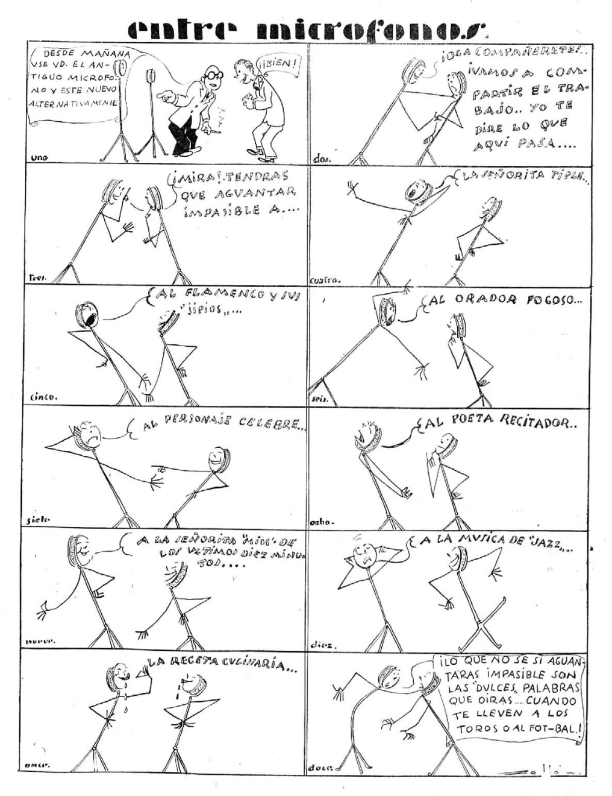
010
19 de agosto de 1933
Esta delicada tira cómica en doce viñetas presenta a un micrófono veterano del estudio que instruye a un recién llegado sobre todo lo que tendrá que soportar: la señorita tiple, el flamenco y sus jipíos, el orador fogoso, el personaje célebre, el poeta recitador, la música de jazz, la receta culinaria…
El micrófono veterano advierte al novato: lo peor serán «las dulces palabras» que oirá cuando lo lleven a los toros o al fútbol. La viñeta ofrece, con humor, un catálogo completo de la programación radiofónica de la época, vista desde la perspectiva sufrida del propio micrófono.
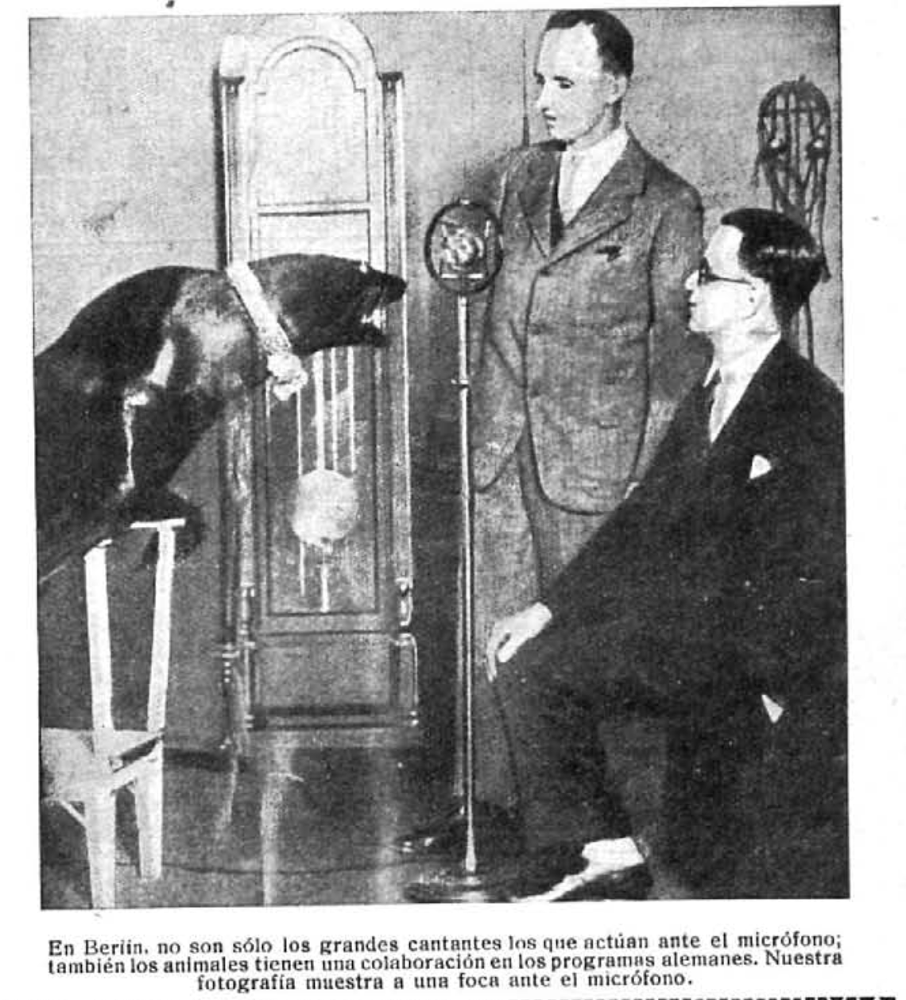
011
15 de mayo de 1927
En Berlín, como nos informa Ondas, no solo los grandes cantantes actuaban ante el micrófono sino que también los animales tenían su espacio en la programación.
Al fin y al cabo, si la radio podía retransmitir conciertos desde aviones, flamenco desde un estudio madrileño y canciones populares japonesas, ¿por qué no el canto de una foca? Es la lógica imparable de un medio que, en sus primeros años, quiso llevar todos los sonidos del mundo hasta el salón de casa, sin importar su procedencia.
Os animamos a explorar otras imágenes con la palabra clave «micrófono» en nuestro buscador. Se trata de una de las categorías más extensas del repositorio: los micrófonos, con sus logos, fueron (y siguen siendo) auténticas señas de identidad de las distintas emisoras de radio.
Explorar el repositorio